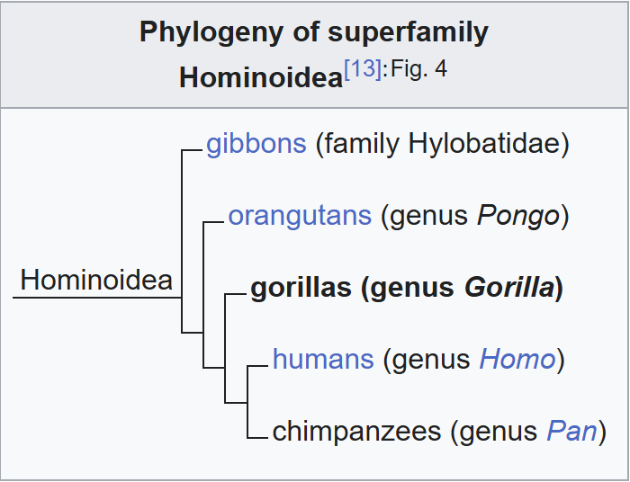

Gorillas are primarily herbivorous, terrestrial great apes that inhabit the tropical forests of equatorial Africa. The genus Gorilla is divided into two species: the eastern gorilla and the western gorilla, and either four or five subspecies. The DNA of gorillas is highly similar to that of humans, from 96 to 99% depending on what is included, and they are the next closest living relatives to humans after the chimpanzees.
Gorillas are the largest living primates, reaching heights between 1.25 and 1.8 m (4 ft 1 in and 5 ft 11 in), weights between 100 and 270 kg (220 and 600 lb), and arm spans up to 2.6 m (8 ft 6 in), depending on species and sex. They tend to live in troops, with the leader being called a silverback. The eastern gorilla is distinguished from the western by darker fur colour and some other minor morphological differences. Gorillas tend to live 35-40 years in the wild.
Gorillas' natural habitats cover tropical or subtropical forest in Sub-Saharan Africa. Although their range covers a small percentage of Sub-Saharan Africa, gorillas cover a wide range of elevations. The mountain gorilla inhabits the Albertine Rift montane cloud forests of the Virunga Volcanoes, ranging in altitude from 2,200 to 4,300 m (7,200 to 14,100 ft). Lowland gorillas live in dense forests and lowland swamps and marshes as low as sea level, with western lowland gorillas living in Central West African countries and eastern lowland gorillas living in the Democratic Republic of the Congo near its border with Rwanda.
There are thought to be around 316,000 western gorillas in the wild, and 5,000 eastern gorillas. Both species are classified as Critically Endangered by the IUCN; all subspecies are classified as Critically Endangered with the exception of the mountain gorilla, which is classified as Endangered. There are many threats to their survival, such as poaching, habitat destruction, and disease, which threaten the survival of the species. However, conservation efforts have been successful in some areas where they live.
History and etymology
The word gorilla comes from the history of Hanno the Navigator (c. 500 BC), a Carthaginian explorer on an expedition to the west African coast to the area that later became Sierra Leone. Members of the expedition encountered "savage people, the greater part of whom were women, whose bodies were hairy, and whom our interpreters called Gorillae". It is unknown whether what the explorers encountered were what we now call gorillas, another species of ape or monkeys, or humans. Skins of gorillai women, brought back by Hanno, are reputed to have been kept at Carthage until Rome destroyed the city 350 years later at the end of the Punic Wars, 146 BC.
In 1625 Andrew Battel mentioned the existence of the animal, under the name Pongo:
-
This Pongo is in all proportion like a man, but... he is more like
a Giant in stature, than a man: for he is very tall, and hath a
man's face, hollow-eyed, with long haire vpon his browes. His face
and eares are without haire, and his hands also. His bodie is full
of haire, but not very thicke, and it is a dunnish colour. . . Hee
goeth alwaies vpon his legs, and carrieth his hands clasped on the
nape of his necke, when he goeth upon the ground... They goe many
together, and kill many Negroes that trauaile in the Woods . . .
Those Pongos are neuer taken aliue, because they are so strong,
that ten men cannot hold one of them...
——Andrew Battel, 1625
A century and a half after Battel's story was published, one writer called Radermacher wrote that "the large species, described by Buffon and other authors as of the size of a man, is held by many to be a Chimera."
The American physician and missionary Thomas Staughton Savage and naturalist Jeffries Wyman first described the western gorilla in 1847 from specimens obtained in Liberia. They called it Troglodytes gorilla, using the then-current name of the chimpanzee genus. The species name was derived from Ancient Greek Γόριλλαι (gorillai) 'tribe of hairy women', as described by Hanno.
Evolution and classification
The closest relatives of gorillas are the other two Homininae genera, chimpanzees and humans, all of them having diverged from a common ancestor about 7 million years ago. Human gene sequences differ only 1.6% on average from the sequences of corresponding gorilla genes, but there is further difference in how many copies each gene has.
Until recently, gorillas were considered to be a single species, with three subspecies: the western lowland gorilla, the eastern lowland gorilla and the mountain gorilla. There is now agreement that there are two species, each with two subspecies. More recently, a third subspecies has been claimed to exist in one of the species. The separate species and subspecies developed from a single type of gorilla during the Ice Age, when their forest habitats shrank and became isolated from each other. Primatologists continue to explore the relationships between various gorilla populations. The species and subspecies listed here are the ones upon which most scientists agree.